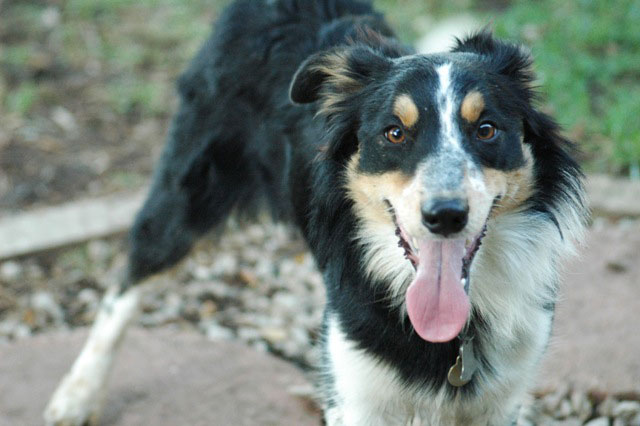
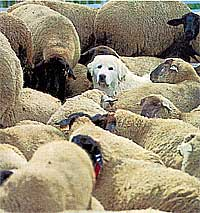
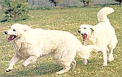
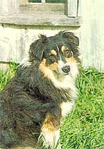

When I visit a farm for the first time, it is always the dogs that greet me first, barking to alert their owners of the arrival of a stranger. These dogs are integral members of every farm, regardless of their shape and size, because they all have a purpose: to provide companionship or protection, or to assist with livestock movement.
There are two broad categories of working farm dogs that are differentiated on the basis of their interactions with livestock. The herding dogs were bred to assist with the movement of livestock, and livestock guardian dogs were developed to protect domestic animals from predators. These two groups of dogs were developed through centuries of selective breeding, which modifies instinctive canine behavior. As pups, wolves and coyotes display sequences of mixed social, submissive, play and investigative patterns. As the pups mature to adults, they gain predatory patterns which include the stalking and lethal crush-bite-kill patterns of the true predator. With the development of working farm dogs, these two characteristics - the social and predator behavior pattems - have been channeled into a working relationship between dog and livestock. Obviously, herding and guarding dogs need special training and care.
The specific purpose of herding dogs is to move large numbers of livestock effectively and efficiently at the command of the owner or livestock producer. There are breeds that are better with sheep, others better with cattle, and some work many species of herd animals. Some examples of gathering dogs include the collie, border collie and Australian shepherd. The cattle dogs include the Welsh corgi, bouviers of Flanders, and the Queensland blue heeler or Australian heeler. Through centuries of breeding, herding dogs have been developed by selection of particular behavioral characteristics. Herding dogs are selected to show hunting characteristics that include eye (staring at livestock), stalk, and grip or heel (chase). The herding dogs have been selected to display the eye, stalk and chase, but to mature before the deadly crush-bite-kill patterns of the predator develop.
Gathering dogs, such as the border collie, circle the livestock and work the flight zone of the animal, moving the lead animals with their presence and eye. The dog will instinctively position itself directly opposite the handler on the other side of the livestock. When the handler moves to the left, the dog will move to the right and vice-versa. This gathering instinct is part of the predatory pattern, but the dog can be taught to go out, circle the livestock, and bring the animals towards the handler.
There are three known heritable instincts of the border collie: clapping (crouching), eye (staring at the sheep), and barking. These are not done when herding but under other conditions. These characteristics are desirable and are selected for when breeding. Acoustic signals are used to command the herding dogs, usually in the form of whistles, which can be heard over the distances involved when gathering large flocks of sheep in a vast pasture.
The physical characteristics and behavior of herding dogs differ from those of guarding dogs. Herding dogs are within the 10 to 20 kilogram weight range (22 to 42 pounds) with ears that are often pricked. The color of the breeds is often dark with white or brown markings, though some are white or gray with darker spots.
Since the 1970s, people in the U.S. have become interested in using guard animals for predator control, an economical and environmentally sound alternative to guns, traps and poison. Donkeys and llamas are very effective guard animals, but when predator pressure is intense, they become prey as well. The guarding dogs include such breeds as the great Pyrenees, komondor, kuvasz and maremma. The guard dogs are large dogs, standing 25 inches or more at the shoulder, weighing 30 to 55 kilograms, with ears that hang down. The color of these breeds is usually white or gray, but some of the breeds are brown with darker markings.
For centuries, guard dogs have provided many benefits to livestock producers world-wide (sheep producers have benefitted most). The presence of the guard dog reduces sheep losses to predators and reduces labor by lessening the need for night corralling. The guard dog will bark when predators approach and alert owners to disturbances in the flock, thereby protecting the family and ranch property. These dogs also allow for more efficient use of pastures and possible expansion of the flock because of decreased labor and space requirements.
The behavior characteristics of the guarding dogs differ radically from those of the herding dogs, the result of centuries of breeding for selective traits that make for a successful guard dog. Guarding dogs are selected to show more of the puppy-like or juvenile behavior of their wild ancestor, the wolf. The development of the guard dog progresses to include the social, submissive and investigative behaviors, and the dogs mature at that stage. The crush-bite-kill behavior pattern does not express itself.
Thus, the guard dog is a full-time member of the flock, unlike the herding dog. Some breeds are better with livestock than others, so consider the breed and find a respectable breeder. These breeds have been developed to work independently of humans, and they function best when socialized with livestock from a young age. This exposure ensures a complete bond of the dog with the livestock in its care. The guard dog lives fulltime with the flock and accepts the livestock as family. It will investigate and aggressively confront intruders, but will be attentive to the sheep and never harm them. A guard dog can take up to two years to mature into its role as flock guardian, an important fact when considering this as a predator-control option.
The primary goal when raising a guard dog is to ensure complete socialization and bonding with the animals that will, in the near future, be in its care. Early and continued association with the sheep or other livestock to be guarded will cause the natural instincts of the dog to develop into a complete bond between the mature dog and livestock. If this bond is not formed, the dog may wander away, leaving the animals unprotected.
Bring the puppy to the farm between 7 and 8 weeks of age. Separate it from all other dogs, including littermates. The lone pup will seek companionship from the sheep. Body contact between pup and sheep enhances the formation of a strong bond. The ideal place to rear a pup is in a small pen or corral that is escape-proof. A puppy fresh from human contact and fellow pups will be inclined to leave the lambs in search of more familiar companionship, so the pen needs to prevent escape. The pen should be about 150 square feet, increasing in size as the pup grows. Since puppies are small and easily intimidated, 3 to 6 sheep in the pen is ideal, with orphan lambs the best choice. Socialize the guard pups with animals that are non-aggressive. You'll want a separate area accessible only to the pup. This provides a bit of personal space and should also be the area where the pup finds food and shelter. Place the water in a common area where the sheep and pup are forced to mingle, allowing further bonding.
For the first few days, check the pup several times, to make sure that no animals are too aggressive towards it, and that the young dog is aware of the food, water and shelter sources. If any animal continues to be overly aggressive, remove that animal from the enclosure and replace it with another. After the first few days, the frequency of checks can be reduced, but check the pup at least once daily, and minimize human contact during these daily checks.
The initial socialization period should last at least 16 weeks. After this period of time, place the sheep and pup in a larger area or pasture with the rest of the sheep. This period of training demands more time commitment. It is imperative to observe the sheep and ensure the safety of the pup from those animals that are not already socialized to its presence.
The puppy will want to explore its new territory. It should return to the sheep and pasture after a short time. If it does not, encourage it to stay near the sheep. If the early socialization process is done right, the pup will prefer to stay with the sheep rather than wander away .
If the dog insists upon wandering away from the sheep towards the house and children, keep it in a small escape-proof enclosure during the night and attempt to return the dog with the flock the next day. Once the dog has a strong bond with the flock, it may include peripheral areas in its scouting patrols, but on the whole, it will routinely remain with the sheep.
The guardian behavior of these dogs is largely instinctive, and influences on the pup only encourage the natural instincts to mature into effective work behavior. If a pup plays too much or is too aggressive, you must take corrective measures before this play behavior progresses towards rougher behavior. Like children, pups learn easily and quickly at an early age. Shake the pup briefly by the scruff of the neck and use the command "NO." This is an effective reprimand. A pup that is excessively playful towards lambs can be cured by the introduction of larger lambs, or yearlings, that will not tolerate the pup's playful behavior.
A brief period of isolation, where the pup is separated from the sheep but can still see them, will reinforce efforts to teach the pup appropriate behavior. Owners should also use the command "NO" when the dog behaves inappropriately - chasing sheep or jumping on people. Your guard dog must come on command. If you expect the dog to consistently respond to the command, be sure that the dog has a pleasant experience when it arrives.
The dog should be trained to walk on a leash, since at times it is necessary to lead the dog or tie it temporarily. The basic nature of the guard dog is independence, so additional training may he excessive. Eventually, the guard dog will work without human supervision.
When the dog reaches a certain level of maturity, it will begin to display protective and territorial behaviors towards predators, that threaten the flock. There is no standard age at which a guard dog matures. Several signs indicate that a dog is ready to assume the guarding role: male dogs, and often females, use raised leg urination rather than the squatting position; scent marking (urination and defecation) becomes more concentrated at the periphery of the pasture; barking at novel stimuli becomes more predictable and direction oriented; dogs are active more frequently and for longer periods of time; patrolling activities increase in frequency and duration; dogs become more interested in sheep than humans. These behavioral characteristics can be useful to gauge maturity, but the guard dog must be large enough to defend itself if confronted by indigenous predators.
Even though the guard dog spends the majority of its time with the flock, it still needs human care. You must provide the guard dog with food, water, and, during inclement weather, shelter. The guard dog lifestyle is active, so it is necessary to have high quality food easily accessible. If the dog is required to search for food, that is less time spent patrolling and protecting the flock. Many people use self-feeders for guard dogs, with a barrier constructed around the food source to prevent the sheep from eating it.
Puppies should receive the vaccination series to protect against distemper virus, parvovirus and rabies. These vaccinations should be boostered annually to protect against viruses carried by other dogs and wildlife. Since the dog is in a pasture environment and therefore more likely to be carrying a worm burden, regular deworming should be done.
Another important consideration is heartworm. Discuss with your veterinarian the incidence of heartworm where you live to decide if control is necessary. It is impossible to treat the environment for fleas, but at least treat the dog. It is best to consult your veterinarian on an appropriate maintenance vaccination and deworming plan for your guard dog.
Routinely examine your guard dog for cuts, abscesses and changes in behavior or weight. Your observations can be the fast clue that your guard dog may require further attention from a professional.
|
 Alison Rogers Some working dogs, such as this border collie, have strong herding instincts. |
 GORDON FISHNER/TONY STONE IMAGES Unlike the herding dog, this guard dog is a full-time member of the flock. |
 GERARD LACZ/PETER ARNOLD The kuvasz is a breed of guard dog selected to show more of the puppylike or juvenile behavior of its wild ancestor, the wolf. |
|
 KEN COLE/ANIMALS ANIMALS A great herding dog: the tri-colored Australian shepherd. |
|
|